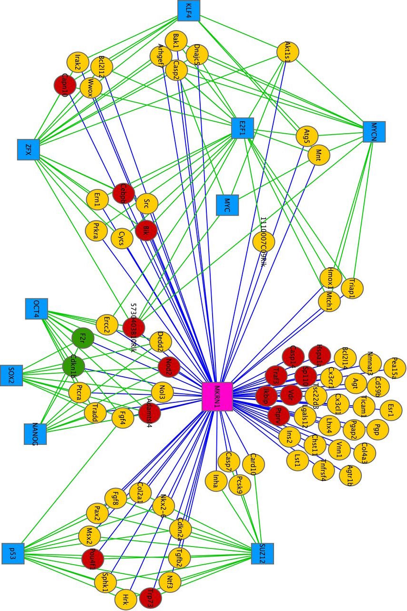

				<section>
				<h1>Introduction to Network Biology</h1>
				<h4><highlight>Why Networks?</highlight></h4>
				<div class="column">
					Networks are everywhere...<br />
					<em class="fragment">especially in biology!</em>
					<ul>
						<li>Molecular networks</li>
						<li>Cell-cell communication</li>
						<li>Nervous systems</li>
						<li>Social networks</li>
					</ul>
				</div>
				<div class="column">
					Networks are powerful tools...<br />
					<em class="fragment">especially in biology!</em>
					<ul>
						<li>Reduce complexity</li>
						<li>More efficient than tables</li>
						<li>Great for data integration</li>
						<li>Intuitive visualization</li>
					</ul>
				</div>  

				<aside class="notes" data-markdown>
				Add speaker notes here...
				</aside>
				</section>

				<section>
				<h3>Powerful Tools</h3>
				Transcription factors targeting apoptosis genes that bind MKRN1 in protein-mRNA network in embryonic stem cells.
				
				<br />
				One network figure conveys results from multiple techonolgies.  
				<small style="margin:10px 0 0 350px;">Cassar, <em>EMBO Reports</em> 2015, Fig.8</small>
				<aside class="notes" data-markdown>
				Work from Univ. of Toronto! Showing Figure legend: _Seventy‐six apoptosis‐related transcripts identified in the MKRN1–mRNA network are shown as circular nodes. Blue edges denote MKRN1–mRNA associations. Green edges specify occupancy of ESC‐associated transcription factors (blue squares) at the respective gene's promoter based on published data [10], [54]. Circular node color indicates whether the transcript was upregulated (red), downregulated (green), or not differentially expressed (yellow) in ADR‐treated R1 ESCs_.
				</aside>
				</section>

				<section>
				<h3>Powerful Tools</h3>
				<div class="column">
					<ul>
						<highlight>Analysis</highlight>	
						<li>Topological properties</li>
						<li>Hubs and subnetworks</li>
						<li>Classify, cluster and diffuse</li>
					</ul>
				</div>
				<div class="column">
					<ul>
						<highlight>Visualization</highlight>
						<li>Data overlays</li>
						<li>Layouts and animation</li>
						<li>Exploratory analysis</li>
						<li>Context and interpretation</li>
					</ul>
				</div>
				
				<br /><small style="margin:10px 0 0 0;">Cassar, <em>EMBO Reports</em> 2015, Fig.8</small>
				<aside class="notes" data-markdown>
				Figure from UT groups! Legend: _Seventy‐six apoptosis‐related transcripts identified in the MKRN1–mRNA network are shown as circular nodes. Blue edges denote MKRN1–mRNA associations. Green edges specify occupancy of ESC‐associated transcription factors (blue squares) at the respective gene's promoter based on published data [10], [54]. Circular node color indicates whether the transcript was upregulated (red), downregulated (green), or not differentially expressed (yellow) in ADR‐treated R1 ESCs_.
				</aside>
				</section>

				<section>
				<a href="https://cytoscape-publications.tumblr.com/" target="_blank">
					<ribbon>Applications in Research</ribbon>
				</a>
				<a href="https://cytoscape-publications.tumblr.com/" target="_blank">
					
				</a>
				<aside class="notes" data-markdown>
				Click ribbon or image to open tumblr feed in new tab...
				</aside>
				</section>
